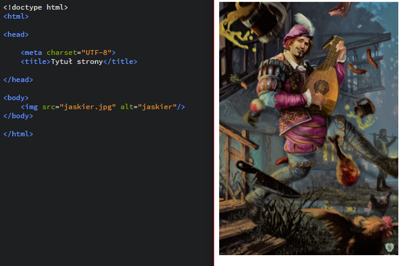
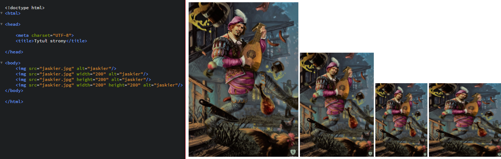
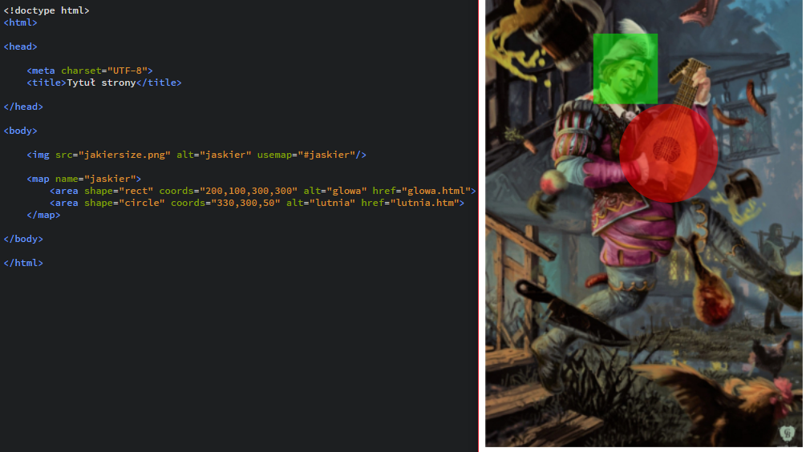
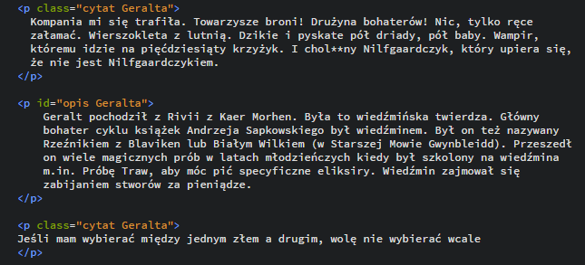
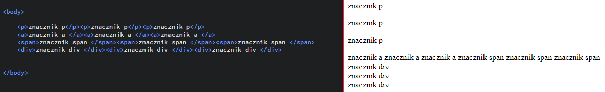
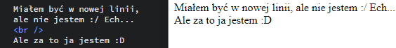

WARSZTATY WEBOWE Mikołaj Szumigalski
Powrót
Zajęcia 4
Link do pobrania prezentacji z zajęć nr 4: Prezentacja 3
1. Dodawanie obrazów na stronę
Za pomocą znacznika img możemy dodać obrazek na stronę. Wymaganym do tego atrybutem jest src (source) w którym musimy podać ścieżkę do naszego obrazka. Jeśli obrazek jest w tym samym katalogu co nasz plik html, wystarczy podać samą nazwę obrazka, jeśli nie podajemy pełną ścieżkę. Możemy również linkować obrazki z internetu. Wystarczy podać w tym miejscu link do niego.
1.1 Przydatne atrybuty znacznika img
Width i height
Z obrazkiem na stronie możemy zrobić kilka przydatnych rzeczy. Możemy ustalić jego wysokość i szerokość (atrybuty kolejno width i height). Ustalenie jednego z tych atrybutów sprawi, że automatycznie drugi przeskaluje się tak, aby stosunek wysokości obrazka do szerokości był zawsze taki sam. Dopiero ustalenie jednocześnie wysokości i szerokości zaburzy tą skalę i obrazek się zniekształci
{kind=link}
Alt
Atrybut alt to tekst alternatywny, który wyświetla się zamiast obrazka na stronie. Warto w tym miejscu krótko napisać co obrazek przedstawia. Jest to nie tylko przydatne gdy np. obrazek jest źle podlinkowany, czy gdy przypadkowo go usuniemy z folderu, ale również może pomagać niewidomym którzy za pomocą specjalnych programów odczytują właśnie atrybut alt przy przeglądaniu stron z obrazkami.
Usemap
Atrybut wykorzystujący ciekawy znacznik map. Za jego pomocą możemy podzielić obrazek na obszary, z których każdy jest osobnym linkiem. Obszar może mieć kształt czworokąta, lub okręgu. Oprócz obrazka poniżej świetny przykład można znaleźć tutaj . Atrybut shape wyznacza kształt naszego pola (rect - czworokąt, circle - okrąg). Dodatkowo pole zajmowane przez każdy z "wycinków" określamy atrybutem coords . Przy czworokącie atrybut posiada cztery wartości - pierwsze dwie to koordynaty lewego górnego wierzchołka, a pozostałe to koordynaty prawego dolnego. Przy okręgu wartości są 3 - pierwsze dwie to koordynaty środka okręgu, a trzecia to jego promień.  Oczywiście obrazek przedstawia tylko hipotetyczne pola które po kliknięciu byłyby odnośnikami.
{kind=link}
2. Grupowanie elementów
Na poprzednich zajęciach poznaliśmy takie znaczniki jak nav , article, czy p . Jak mówiłem służą do grupowania tekstu po to aby móc go później stylować. Takich znaczników i atrybutów, które się do tego przydają jest więcej i dziś poznamy kilka z nich.
2.1 Atrybuty ID i Class
Te atrybuty są szególnymi, ponieważ możemy je nadać praktycznie prawie wszystkim znacznikom. Ich wartość ustalamy sami, powiniem być to jakiś wyraz najlepiej. Do czego służy taki atrybut? Głównie do stylowania elementu. Różnica jest taka, że może być w dokumencie tylko jeden znacznik o danej wartości atrybutu przy atrybucie id zaś przy atrybucie class może być kilka znaczników o tej samej wartości tego atrybutu
Elementy liniowe i blokowe
Bardzo ważna kwestia o której warto pamętać przy pisaniu kodu. Przypatrzmy się podanemu przykładowi:
{kind=link}
Na samym początku warto przypomnieć, że użyty w pliku html Enter nie będzie egzekwowany w widoku witryny. Widać to na przykładzie:
Wracając co wcześniejszego przykładu zróćmy uwagę na układ naszych elementów. Mamy po 3 elementy zawarte w konkretny znacznik i ich układ na stronie się różni. Znacznik p przesówa następny element do nowej linii z odstępem, znacznik div podobnie jak p, ale bez odstępu, a elementy w znacznikach span i a wyświetlają się koło siebie.
Elementy wyświetlające się koło siebie nazywamy elementami liniowymi (bo wyświetlają się w 1 linii). Elementy, które wyświetlają się w osobnych liniach nazywamy blokowymi